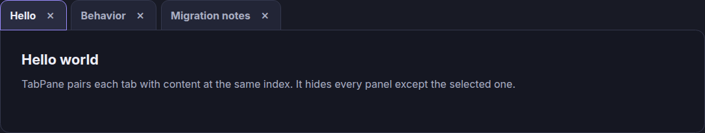

TabPane / completed migration report
From DOM mutation to React ownership
This walkthrough follows the saved source, approved decisions, and browser proof for the TabPane migration.
- Analyzer findings
- 133
- Approved decisions
- 27
- Browser scenarios
- 7
- Unapproved mismatches
- 0
Legacy source
The browser global owns the DOM
MooTools pairs tabs and panels by index. The class reads the DOM, writes classes and display styles, and emits index-based events.
- Core
components/tab-pane/TabPane.js-
Initializes the container and selects a tab.
- Extras
components/tab-pane/TabPane.Extra.js-
Adds and closes tab-panel pairs.
- Caller
main.js-
Creates the instance and owns the form and status text.
initialize: function(container, options, showNow) {
this.setOptions(options);
this.container = document.id(container);
this.container.getElements(this.options.contentSelector).setStyle('display', 'none');
this.container.addEvent('click:relay(' + this.options.tabSelector + ')', function(event, tab) {
this.show(tab);
}.bind(this));
if (typeOf(showNow) == 'function') {
showNow = showNow();
} else {
showNow = showNow || 0;
}
this.show(showNow);
},var tabs = this.container.getElements(this.options.tabSelector);
var selected = tabs.indexOf(this.container.getElement('.' + this.options.activeClass));
tab.destroy();
content.destroy();
this.fireEvent('close', what);
this.show(selected.limit(0, tabs.length - 2));
The close method always calls show(selected). Closing
a different tab can move the active selection because the old
index now points at another tab.
Analyzer inventory
The analyzer records the contract
worksheet.generated.json contains 133 findings across
15 kinds. The inventory covers callers, DOM work, events, API
inputs, markup, selectors, and styles.
| Finding kind | Count | Finding kind | Count |
|---|---|---|---|
| caller | 4 | dependency | 10 |
| DOM read | 6 | DOM write | 7 |
| event listener | 9 | event | 3 |
| global | 1 | import | 16 |
| markup | 18 | public input | 3 |
| public method | 5 | lifecycle | 1 |
| selector | 25 | style | 24 |
| side effect | 1 | Total | 133 |
| Core finding | Kind | Evidence location |
|---|---|---|
| TabPane constructor caller | caller | main.js:5 |
| Change listener caller | event listener | main.js:7-9 |
| Close-button listener | event listener | main.js:11-24 |
| Add form listener | event listener | main.js:26-59 |
| Mount lifecycle | lifecycle |
components/tab-pane/TabPane.js:41-61
|
| Delegated tab selection | event listener |
components/tab-pane/TabPane.js:49-51
|
| Add method | public method |
components/tab-pane/TabPane.Extra.js:26-42
|
| Close method | public method |
components/tab-pane/TabPane.Extra.js:44-63
|
| Get and index helpers | public method |
components/tab-pane/TabPane.js:63-72,
components/tab-pane/TabPane.js:74-83
|
| Show method | public method |
components/tab-pane/TabPane.js:85-104
|
| Selector option inputs | public input |
components/tab-pane/TabPane.js:34,
components/tab-pane/TabPane.js:35,
components/tab-pane/TabPane.js:36
|
| Add, change, and close emissions | event |
components/tab-pane/TabPane.Extra.js:37,
components/tab-pane/TabPane.js:101,
components/tab-pane/TabPane.Extra.js:59
|
| Visibility mutations | DOM write |
components/tab-pane/TabPane.js:46, 98, 100,
components/tab-pane/TabPane.Extra.js:33
|
| Insertion and destruction | DOM write |
components/tab-pane/TabPane.Extra.js:29, 30, 32, 34,
57, 58
|
| Caller global exposure | side effect | main.js:131-135 |
| TabPane browser global | global |
components/tab-pane/TabPane.js:29,
components/tab-pane/TabPane.Extra.js:25,
src/components/tab-pane/TabPane.tsx:34-236
|
Decisions
Twenty-seven decisions are approved
migration.json records 27 approved decisions. They
define what React preserves, replaces, deletes, and fixes.
Replace caller ownership
Move the form, status, close trigger, and component lifecycle to the React demo boundary. Keep a global only for the parity test handle.
Preserve observable events
Keep the required add, change, and close triggers, payloads, and ordering. Remove only the approved close side effects.
Replace selector inputs
Replace tabSelector,
contentSelector, and activeClass with
structured React tab data and stable IDs.
Delete and fix narrow APIs
Delete get and indexOf. Keep the close
behavior, but retain the selected stable tab when another tab
closes.
This is contract parity, not literal identity. React intentionally fixes non-active close selection and close-button bubbling.
| Scenario assertion | Legacy result | React result | Approved reason |
|---|---|---|---|
api-close-selected-tab |
Selection moves to Migration notes. | The selected Behavior tab stays selected. | React retains the selected stable tab. |
api-close-status |
Showing tab 2. |
Showing tab 1. |
The stable tab moves to index 0 after removal. |
api-close-event-order |
The final change payload is 1. |
The final change payload is 0. |
The payload reports the stable tab's new index. |
button-close-events |
An extra change event fires before close. | No extra pre-close change event fires. | The React close button stops propagation. |
Mechanical mapping
State replaces DOM bookkeeping
The migration maps each required behavior to a React owner. It does not let MooTools and React write the same DOM.
| Legacy mechanism | React mechanism | Result |
|---|---|---|
new TabPane(container) |
<TabPane ... /> |
The React tree owns mount and cleanup. |
| Selector options and index pairs | TabPaneTab objects with stable IDs |
Tabs and content share one data record. |
getElements, classes, and styles |
tabs and selectedId state |
JSX derives active classes and panel visibility. |
| Delegated container clicks | React tab and close-button handlers | Each action names its target index. |
fireEvent and addEvent |
A typed listener map behind TabPaneHandle |
The parity handle keeps required event calls. |
inject and destroy |
Immutable array add and filter operations | React commits the resulting DOM. |
window.MooSandbox.tabPane |
window.ReactSandbox.tabPane |
The global exists only as the configured proof boundary. |
var selected = tabs.indexOf(this.container.getElement('.' + this.options.activeClass));
tab.destroy();
content.destroy();
this.fireEvent('close', what);
this.show(selected.limit(0, tabs.length - 2));const nextTabs = currentTabs.filter(
(tab) => tab.id !== closingTab.id,
);
let nextSelectedId = selectedIdRef.current;
if (closingTab.id === selectedIdRef.current) {
nextSelectedId =
nextTabs[Math.min(index, nextTabs.length - 1)]?.id ??
nextTabs[0]?.id ??
"";
}
tabsRef.current = nextTabs;
selectedIdRef.current = nextSelectedId;
setTabs(nextTabs);
setSelectedId(nextSelectedId);
fireEvent("close", index);
const selectedIndex = nextTabs.findIndex(
(tab) => tab.id === nextSelectedId,
);
fireEvent("change", selectedIndex);
queueMicrotask(() => tabElementsRef.current.get(nextSelectedId)?.focus());Optional adapter
Dry-run only
npm run migrate -- adapter tab-pane
The command has no --write flag. It returns a
dry-run plan for three files.
-
main.jsreplacesnew TabPanewithmountTabPane. -
adapters/mount-tab-pane.jscreates the legacy mount wrapper. -
bootstrap.tsloads the wrapper beforemain.js.
No adapter write occurred because React has direct ownership. The legacy page remains the baseline.
React result
One component owns state and markup
TabPane.tsx owns tabs, selection, events, keyboard
movement, focus, and tab semantics.
TabPaneDemo.tsx owns the form, status text, fixture
bridge, and parity handle.
- Structured tabs Each tab has an ID, label, React content, and closable flag.
- Stable selection Selection uses a tab ID. Array index changes do not change tab identity.
- Explicit events The handle supports add, change, close, show, and listener cleanup.
- Tab semantics The markup uses tablist, tab, and tabpanel roles with linked IDs.
export type TabPaneTab = {
id: string;
label: string;
content: ReactNode;
closable: boolean;
};
export type TabPaneEventName = "add" | "change" | "close";
export type TabPaneEventListener = (index: number) => void;
export type TabPaneHandle = {
add(tab: TabPaneTab, showNow?: boolean): void;
addEvent(name: TabPaneEventName, listener: TabPaneEventListener): void;
close(index: number): void;
removeEvent(name: TabPaneEventName, listener: TabPaneEventListener): void;
show(index: number): void;
};<button
aria-label={`Close ${tab.label} tab`}
className="tab-close"
data-close-tab=""
onClick={(event) => {
event.stopPropagation();
closeIndex(index);
}}
type="button"
><li
aria-controls={`panel-${tab.id}`}
aria-selected={active}
className={active ? "tab active" : "tab"}
data-tab-id={tab.id}
id={`tab-${tab.id}`}
key={tab.id}
onClick={() => selectIndex(index)}
onKeyDown={(event) => handleTabKeyDown(event, index)}
ref={(element) => {
if (element === null) {
tabElementsRef.current.delete(tab.id);
} else {
tabElementsRef.current.set(tab.id, element);
}
}}
role="tab"
tabIndex={active ? 0 : -1}
><TabPane
initialSelectedId="hello"
initialTabs={initialTabs}
onMinimumTabClose={() => setStatus("Keep at least one tab open.")}
ref={handleRef}
/>Parity proof
The saved verification result is PARITY
The baseline and final manifests record the same 7 scenarios and 31 browser observations. Verification ran 4 legacy unit tests and 4 React unit tests. The final result is PARITY, attested true, with 4 approved behavior differences and 0 unapproved mismatches.
- Browser scenarios
- 7
- Browser observations
- 31
- Legacy unit tests
- 4
- React unit tests
- 4
- Approved differences
- 4
- Unapproved mismatches
- 0
Seven browser scenarios
-
initial-selectionChecks the first tab, panel, status, style, and image. -
select-second-tabChecks selection, visibility, status, and event order. -
add-and-open-tabChecks add, selection, focus, and event order. -
reject-incomplete-addChecks validation, status, and no emitted events. -
close-non-active-by-apiChecks the approved stable-selection fix. -
close-active-with-buttonChecks close-button behavior and event order. -
imperative-showChecks the compatibility handle's show method.
Matching initial screenshot SHA-256
3d1551c232afc6e2c9e94864cb6a30e066ebca1ae89550c959353a7f02aa1c8a

tools/mootools-migrate/components/tab-pane/baseline/initial-selection/component.png

tools/mootools-migrate/components/tab-pane/final/initial-selection/component.png
{
"status": "PARITY",
"attested": true,
"runId": "react-2026-08-08T02-40-52-588Z",
"createdAt": "2026-08-08T02:40:57.597Z",
"baselineManifestHash": "sha256:5ad54162e3c80cc7dc461c2f7ce306134fbf4ba39e599757b329c2fa0abef51b",
"candidateManifestHash": "sha256:484f2d512c0d24d01ea38fd137d63371e29699989ceaccf2d64622af1c11ec3c",
"decisionsHash": "sha256:2b3ef366a771b6c18628f2acad050a0c77dc3ce959994786a850aa02f2816607",
"acceptedDifferencesHash": "sha256:e7371ed3a3d9902cdf34e3bf83fc24d48efe1a7bc849abef9da57290fe644693",
"scenariosHash": "sha256:c63439ce6db9639d3d7b53a8f4830c144c11bca4c0d2007b230f90d5aec11e29",
"mismatches": []
}"tests": {
"legacyFile": "components/tab-pane/TabPane.legacy.test.ts",
"legacyDependencies": [
"vendor/mootools-core-1.4.2.js"
],
"reactFile": "src/components/tab-pane/TabPane.test.tsx",
"reactDependencies": []
},The parity result accepts the four approved behavior differences. It reports 0 unapproved mismatches. That is the recorded contract proof.
Rerun commands
Run the migration checks in order
Start from the repository root with the existing Vite server at
http://127.0.0.1:5173.
Analyze
Regenerate the worksheet.
npm run migrate -- analyze tab-paneCapture baseline
Run the legacy test and browser capture.
npm run migrate -- baseline tab-pane \
--base-url http://127.0.0.1:5173Preview adapter
Dry-run only. Do not add --write.
npm run migrate -- adapter tab-paneVerify
Run decisions, tests, build, and browser comparison.
npm run migrate -- verify tab-pane \
--base-url http://127.0.0.1:5173
The target result is PARITY with
attested: true and mismatches: [].